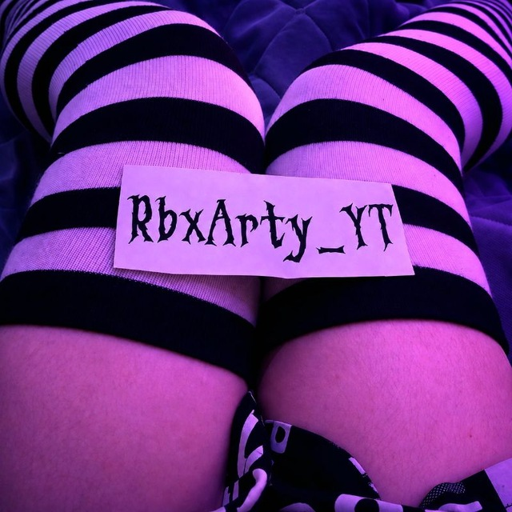

My personality
I am straightforward and independent-minded. I can be stubborn when I believe in something, and I prefer honest, clear communication over guessing games. I value being understood and having room to make my own decisions.

BEHIND QUELLO
Creator · Developer · Builder of Quello
I create digital projects with a focus on interface design, bot development and thoughtful user experience. Quello began as a tool for managing Question of the Day sessions and gradually grew into a connected Discord and Telegram bot project with its own website and documentation. I enjoy turning ideas into practical, polished products and continuously improving the details that make them easier to use.
Back to QuelloA LITTLE MORE
Beyond development and Quello, here are a few things that make me who I am.
I am straightforward and independent-minded. I can be stubborn when I believe in something, and I prefer honest, clear communication over guessing games. I value being understood and having room to make my own decisions.
I like technology, programming, interface design and building projects that feel complete. I also enjoy games and fictional worlds with memorable characters, atmosphere and interesting stories.
Some of the universes and games I keep coming back to:
This page is a small snapshot, not a complete description — interests and projects keep evolving.